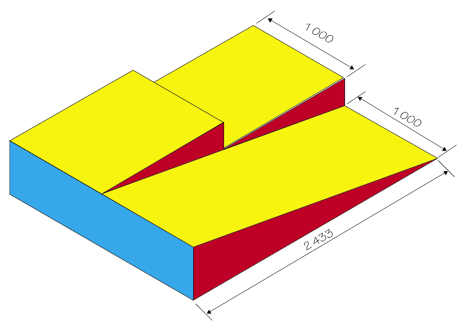
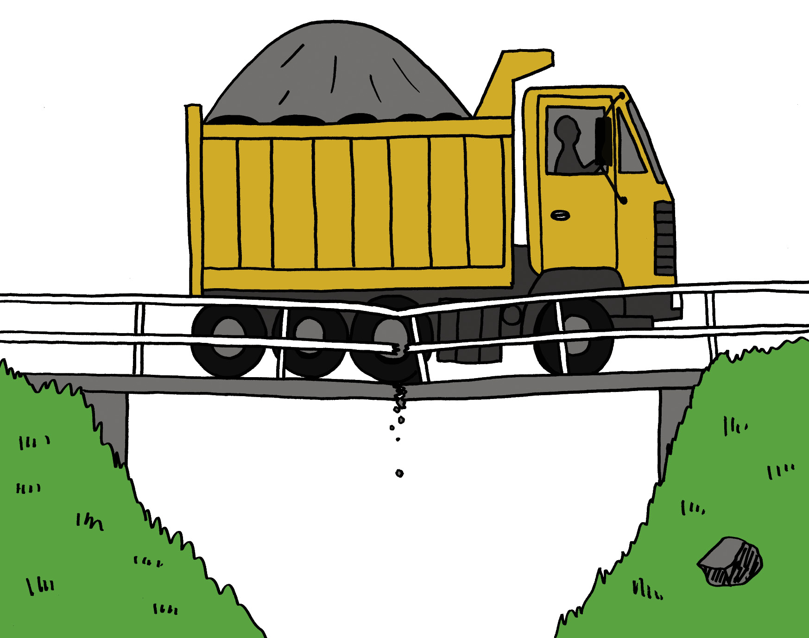
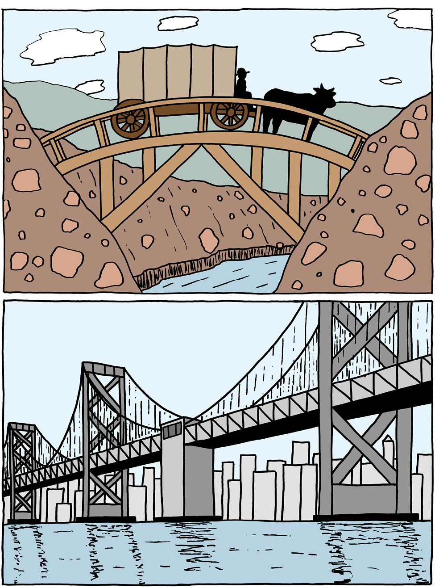

In this chapter, you will learn how to make drawings that show the exact sizes of parts of objects. The drawing will also show what objects look like from different viewpoints.
1.1 About orthographic drawing 4
1.2 Make your first orthographic drawings 7
Figure 1
1.1 About orthographic drawing
In Grades 7 and 8, you learnt different ways of drawing your designs. You can quickly put your ideas on paper with sketches. Adding perspective makes drawings look more realistic. Adding shading and colour make your drawings look even better.
The word orthographic comes from two words. "Ortho" means looking straight at a flat face of an object. "Graphic" means a drawing.
simple sketch
isometric sketch
shading and colour
You will now learn how to make orthographic drawings. This means you will look at an object from different sides and make separate drawings of what you see.
Look at this isometric drawing of a rectangular box. Only three faces of the box are visible.
1. How many faces of the box are not shown on this drawing?

Figure 7
If you look straight down from above at the box, you will see only a blue rectangle.

Figure 8
This is called the top view.

Figure 9
If you look at the box from a certain position on the left, you will see a yellow rectangle.

Figure 10
This is called a side view.

Figure 11
If you look at the box from a certain position on the right, you will see a red rectangle.
This is also called a side view.

Figure 12
It can also be called the front view.

Figure 13
The front view, top view and one side view of a small house are shown below. A set of drawings like this is called first-angle orthographic projection.
Figure 14
First angle orthographic projections are normally drawn in blocks as shown here. The front view is drawn first, in the upper left block. Construction lines are then drawn from the front view to make it easier to draw the top view and a side view. A side view can also be called an end view.
|
Front view |
Side view |
|
Top view |
1.2 Make your first orthographic drawings
An isometric drawing of a mobile staircase is shown on the right. The staircase is 900 mm wide. The other dimensions are shown on the side view on the next page.
A front view of the staircase is shown in the upper left block below. Use construction lines to draw a top view and side view in the lower left and upper right blocks.

Figure 16
Architects use orthographic drawings of houses to tell the builder the size of the windows, how tall the walls are and how high the roof is. These are called dimensions or measurements. We usually write measurements in millimetres (mm).
The small lines on your ruler are 1 mm apart.
Look at this side view of the staircase. You can see the measurements between the arrows.
Figure 17: Side view of the staircase with measurements
Have a look at the drawings below and on the next page. An architect made these while he designed a house.
Scale 1:100
Figure 18: Preliminary drawings

Figure 19: Final drawings
Different kinds of lines in drawings
Different kinds of lines are used in the following drawing:
height = 820
width = 600
depth = 450
centre-to-top = 456
Figure 20
The following types of lines are used in the above drawing:
thick solid lines,
thin solid lines,
dashed lines, and
chain lines.
Make a free-hand copy of this drawing on the next page, in which you use the same types of lines.

Next week
In the next chapter you will further develop your drawing skills. You will have to make various drawings of a staircase and wheelchair ramp.
In this chapter, you will make accurate isometric and orthographic drawings with instruments.
2.1 Stairs and a ramp 16
2.2 Isometric drawing 18
2.3 The plan in orthographic drawings 20
Nelson Mandela High School in the Eastern Cape is brand new. It has a beautiful new community hall with a stage. Learners use the stage for dramas, fashion shows, music events and gospel choir performances. The architects designed great lighting and sound systems, but they forgot one very important thing: to provide access for wheelchairs so that disabled people can get onto the stage.
The principal asked the Grade 9 Technology students to design a mobile staircase and a wheelchair ramp that can be put in front of the stage.
2.1 Stairs and a ramp
Nelson Mandela High School has a new community hall. A staircase and wheelchair ramp is needed for the stage in the hall. The principal made a list of things that should be kept in mind when designing the staircase and wheelchair ramp.
If you look at the picture on the previous page, you will see what a ramp is.
These are called specifications.
The specifications for the staircase and wheelchair ramp are:
- • The stairs and ramp must be made in one unit so that it can be moved.
- • The unit should fit in front of the stage so that people can walk onto the stage and wheelchairs can go up and down.
- • The stage is 400 mm high.
- • The stairs should be wide enough for two people, about 1 200 mm.
- • There should be three steps of the same size.
- • The flat part of each step is 800 mm long.
- • The ramp should be wide enough for one wheelchair – 1 000 mm.
- • The slope of the ramp should be 2 433 mm long.
- • The ramp is at a 10˚ slope.
- • The base of the ramp should be 2 400 mm long.
- • The ramp should have a handrail to prevent wheelchairs from falling off.
To help you imagine what the combined staircase and ramp will look like, you can make a few drawings.
1. Make a rough drawing to show what you think the combined staircase and ramp should look like. Make your drawing on a clean page, and make it big enough to fill the page.
2. Dimensions are given in the above specifications. Write the dimensions in the correct places on your drawing.
An isometric drawing can help you to see more clearly what your idea would look like when it is built. To make an isometric drawing, draw all the vertical lines of the object at 90Ëš to the base, and all the horizontal lines at 30Ëš to the base. You can use isometric grid paper to help you do this.
Activity for homework
Look at the red lines on the grid paper below. Do you see how the vertical line goes up through the middle of the diamond shapes? And how the horizontal line goes across the middle of the diamond shapes? The other lines are at 30Ëš to the horizontal line.
Now use a ruler and sharp pencil to finish drawing the cube below.
vertical line
horizontal line
30Ëš
90Ëš
30Ëš
Figure 3
2.2 Isometric drawing
In Chapter 1, there is an isometric drawing of a staircase. What do you think an isometric drawing of the ramp would look like? It could look a bit like a slice of birthday cake!
Figure 4
1. Make a sketch of the wheelchair ramp that looks like the slice of cake above, on the top part of the isometric grid on the next page.
2. Now make a better sketch on the bottom part of the page.
A sketch is a rough drawing that helps you to quickly put your ideas onto paper. It makes it easier to think about what you are designing.
You do not need to use a ruler or exact measurements.
3. Look at the list of specifications at the beginning of section 2.1 and write the following on your drawing:
- • the height of the ramp,
- • the length of the sloping part of the ramp,in other words the distance from A to B on thedrawing on the right,
- • the length of the base,
- • the width of the ramp, and
-
• the
10Ëš angle
.
Figure 5
A
B
length of base

2.3 The plan in orthographic drawings
Make a sketch of the staircase on the isometric grid below. Remember it has only three steps. Look at the list of specifications and write the following on your drawing:
- • the width of the stairs,
- • the height of the mobile staircase,
- • the height of each step, and
- • the length of the horizontal part of each step.
Homework
1. You already have a drawing of the staircase and a drawing of the wheelchair ramp. Sketch them together as one structure on the isometric grid below.
2. Does your stair/ramp look as if it could work? Does it meet all the principal's specifications? Did you remember the handrail?
3. If you are not satisfied with your drawing, now is the time to make changes and do it again, because it will be assessed by your teacher.
Make orthographic drawings of your design
Another student designed the ramp and staircase shown below, but this learner didn't follow the specifications on page 16 correctly.

Figure 6: Is this design correct according to the specifications on page 16?
1. Compare the above drawing with the specifications for the ramp, given at the beginning of this chapter. Write notes below to indicate any specifications that are not met.
2. On the next page, draw a first-angle orthographic projection of your own design of the stair/ramp, according to the specifications given at the beginning of the chapter. Note that the specifications require three steps. Draw the top view, a side view from the ramp side, and a front view as a person that approaches the stairs to climb them will see the stairs or ramp. You do not have to draw the handrail as well.
Make all the drawings to exact measurements, but keep in mind that if you draw it full size, it will not fit on the paper. So think of a scale that will fit on this workbook paper. Mark the real measurements on all the sides.


The next chapter
In the next chapter, you will learn more about different kinds of forces that may damage the things we build. You will also learn how materials can be made stronger, so that they can withstand forces that act on them.

In this chapter, you will learn about the forces that act on structures and can break them. You will see how structures and parts of structures can be strengthened. You will also learn about different materials that are used in structures, and how materials differ from each other.
3.1 Forces act in different places 28
3.2 Forces act in different ways 32
3.3 Different materials for different purposes 38

Figure 1: This bridge cannot withstand the forces acting on it.

Figure 2: If the house is not strong enough, the wind may break it apart.

Figure 3: Roof sheets come in different shapes.
3.1 Forces act in different places
Identify and analyse forces
The weight of the boy in Figure 4 presses down on the chair as the arrow shows.
When one object pushes against another object, we say that a force is exerted on the object. In this case, you can say that the boy exerts a downward force on the chair, or that there is a downward load on the chair.
1. In each of the pictures on this page and the next, make an arrow to show how the load acts on the structure.

Figure 4: The boy sits still on the chair.
 Figure 5: A man walking on a roof.
Figure 6: A solar heating system on a roof
Figure 5: A man walking on a roof.
Figure 6: A solar heating system on a roof
2. (a) Is the load on the roof in Figure 5 always in the same place? Why do you say so?
(b) Is the load on the roof in Figure 6 always in the same place? Why do you say so?
(c) Are the loads on the bridge in Figure 7 always in the same place? Why do you say so?

Figure 7: Vehicles passing over a bridge.
- •
3. In the above picture, the truck and the car exert forces on the bridge. Can these forces also be called static? Explain why you say so.
- •
4. In each of the following cases, state whether the force exerted on the table is static or dynamic. Explain why you say so in each case.
(a) A pot of flowers standing on the table.
(b) A cat walking on the table.
(c) A boy rolling a soccer ball over the table.
(d) A man scrubbing the table.
5. What is the difference between the loads exerted on the two tables below?


Figure 8: Different ways to put pots on a table.
Look at the different ways in which the two trucks below are loaded. On the one truck, the drums exert force everywhere on the cargo deck of the truck. On the other truck, the load is just one big drum. The single drum exerts force on a small part of the cargo deck.


Figure 9: Different kinds of load on two trucks.
- •
6. Think of a house with a zinc roof and the forces that the sheets exert on the roof structure.
(a) Is the load even or uneven? Why do you say so?
(b) Is the load static or dynamic? Why do you say so?
7. Think of people climbing up and down wooden steps.
(a) Is the load even or uneven? Why do you say so?
(b) Is the load static or dynamic? Why do you say so?
8. You have to design two wooden tables, and you are requested to use as little wood as possible. For the one table, the design brief states that the load on the table will always be static and even. The design brief for the other table states that it has to carry the same weight as the first table, but the load will sometimes be dynamic and uneven. Describe how your designs for the two tables will differ, and explain why.
3.2 Forces act in different ways
Forces can act in the following ways on structures or parts of structures:
- •
- • tension,
- • torsion,
- • compression,
- • shear, and
- • bending.
The different pieces of a frame structure are called sections, elements or members of the structure.

Figure 10: A frame structure made of planks.
Forces can push, pull and twist
Make six paper tubes by rolling sheets of used writing paper. Use glue or tape to prevent the tubes from unrolling.
 Figure 11
Figure 11
1. Put your hands on both ends of a tube and push them towards each other. When you do this, you exert compression forces on the tube.
2. Grab a tube at both ends and try to pull it apart. When you do this, you exert tensile forces on the tube. You put the tube under tension.
3. Put the ends of the tube on two books and press downwards on the middle of the tube. What happens, and what kind of force did you apply to the tube?
4. Grab a tube at both ends and twist it as shown in this picture. When you do this, you apply torsion.

Figure 12
5. Join two tubes by putting a match or small stick through them as shown below.
 Figure 13
Figure 13
When you try to pull the two paper tubes apart now, you will apply shear forces to the stick.

Find strength in shape
1. Fold a used A4 sheet of paper in half over its length.

Figure 14
Fold it again:

Figure 15
Fold it a third time, so that you have a flat strip that is eight layers thick.
Make two more folded strips like this.

Figure 16
2. Put the folded strip at the edge of your desk as shown below. Hold it down on the desk with one hand and press down lightly on the outer part of the strip to bend it downwards.
 Figure
17
Figure
17
3. Now fold your paper strip half-open again, and fold it in a new way so that you get a triangular tube as shown below.
First fold like this: Then fold like this:

Figure 18

Figure 19
to make this triangular tube:

Figure 20
4. (a) Put the triangular tube at the edge of your desk as you did with the flat strip in question 2. Hold it down on the desk with one hand and press down lightly on the outer part to bend it downwards.
(b) What was easier to bend, the flat strip or the triangular tube?
Figure 21
The shape that you see when you look straight at one end of part of a structure is called the cross-section or profile.
5. Make free-hand sketches of the cross-sections of a round tube, a square tube and a triangular tube, in the space below.
6. Open your triangular tube and fold it again to have a T-profile as shown on the right.

Figure 23

Figure 22
7. Let your T-shaped section stand upright on your desk as shown here and press downwards at the top. Do not bend it now.
Take one of the flat folded sections you made in question 1. Hold it upright and press downwards at the top like you did for your strip with the T-cross section.
Which strip is stronger when you press down on its end, the flat section or the T-shaped section? Explain why.
- •
Figure 24

8. Compare the resistance to compression of T-shaped, square-shaped and round sections, each made from one sheet of A4 paper. Explain your answers.
 Figure 25: Metal cross-sections |
Metal sections that are used to build frame structures are made in a variety of profiles. Some popular profiles are shown below. H-profile. This profile is often used as upright supports or columns, for example in buildings. It resists compression very well, and it does not bend easily. |
|
I-profile. This profile is used for railway tracks. The broad base provides stability. |
|
|
U-profile. This is lighter than the H-profile. It is often used to provide horizontal support, for example in shelves. The chassis of a truck is normally made with U-beams. |
|
|
This profile is often called angle-iron, even if it is made of metal. It has higher bending strength than flat strips. It is light and is often used for cross-bracing in pylons, towers and other structures. |
|
|
Tube-profile. This is the best profile for resisting torsion. |

Using internal cross-bracing to resist twisting
Imagine that you made a frame structure with straight pieces of wood.

Figure 26
Now imagine that you twist this frame structure like the person in the photograph is twisting the towel.

Figure 27
The frame structure could end up looking like this:

Figure 28
To prevent the structure from getting twisted like this, you could add more elements as shown here.

Figure 29
This is called internal cross-bracing.
3.3 Different materials for different purposes
How materials can differ from each other
1. What bends more easily: your pencil or a sheet of paper?
2. Put a sheet of paper flat on your desk. Pick it up with both hands and bend it. Now put it back on the desk. Is it flat again?
- •
3. (a) Is wet clay flexible or stiff?
(b) Is the leg of a chair flexible or stiff?
(c) Is a piece of wire flexible or stiff?
(d) Is your shoe flexible or stiff?
4. Press your finger against your desk. Now press your finger against your arm.What was different when you pressed your finger against your desk from when you pressed your finger against your arm?
5. When you press your finger against a bag of sand, will it be the same as against your desk or arm?
Bricks are made by baking clay until it is hard.
Some materials are hard, and some materials are soft.
6. (a) Think of a brick and a piece of foam plastic that is the same size as the brick (like the foam used in mattresses). Which is easier to pick up?
(b) How many bricks do you think you can carry easily if you put them in a box to carry on your shoulder?
(c) How many pieces of foam plastic of the same size do you think you can carry easily if you put them in a box to carry on your shoulder?
A brick is much heavier than a piece of foam plastic of the same size.
One difference between baked clay and foam plastic is that when you take pieces of equal size, the baked clay will be heavier than the foam plastic. It will require more effort to pick it up or to carry it.
The difference between baked clay and foam plastic can be described as follows: Baked clay has a higher density than the foam plastic.
7. (a) What material has the highest density: wood or rock?
(b) What material has the highest density: glass or plastic?
Pieces of metal that lie around outside sometimes look brown. This is called rust or corrosion. Rust is formed by chemical reactions between the metal and oxygen in the air or water. Wood and glass do not corrode. Rock that contains iron does corrode. When you walk in the veld, you can sometimes see pieces of rock that have the same shade of brown.
Corroded rock can have different colours, like those in the coloured strip at the bottom of this page. In the past, colouring for paint was obtained from corroded rock.
8. Iron is used in the construction of towers, roofs, cars and trucks and sometimes even furniture. What can you do to prevent iron from corroding?

|
More about metals |
There are many different metals, such as copper, iron, aluminium, chrome, gold and platinum. Iron is cheaper than most other metals, because it is so plentiful. It is also easy to make iron into different shapes. Iron is normally mixed with a small amount of carbon to form "steel", which is much stronger than pure iron.
Unfortunately, iron corrodes or rusts easily, while other metals do not corrode as easily, if at all. For this reason, iron is often mixed with other metals, for example chrome, to make it resistant against rust. "Stainless steel" is steel that contains a large amount of chrome.
Materials in a house
A house is a good example of a structure made of many different materials. To build a house like the one below, you can use bricks, concrete, wood and steel.

Figure 30
1. Different parts of the house are listed in the left column of the table below. In the right column, fill in what material you think that part of the house is made of.
|
Part of the house |
Material it is made of |
|
The walls |
|
|
The window frames |
|
|
The door |
|
|
The roof structure |
|
|
The roof cover |
|
|
The fence |
|
|
The paving around the house |
Builders choose bricks, concrete, wood and metal because each one is useful in different ways. You can say different materials have different properties.
Concrete is hard and it will not scratch easily, so builders use it on house floors. Concrete is also stiff, so it will not bend when we walk on it. Concrete is not damaged by water and it will not rust.
Bricks do not bend and do not rust, so they are used to build walls.
Wood is used in a house for doors, windows and roofs, because it is flexible. This means that when you slam a door, the wood bends a little but will not break.
Wood can be damaged by water, wind and the heat of the sun. To protect wood against damage and to make it last longer, it should be coated with varnish, oil or some other preservative material.
Steel is hard and strong. Steel is also flexible and it is not easy to crack with a hammer. Therefore steel is used in security gates. However, steel is damaged by water; this is called rusting or corrosion. To stop rusting, you have to cover steel with special paint.
2. Fill in which materials are used for the different parts of the house in the middle column. Then fill in the reasons why you think that material is used for that part of the house in the column on the right.
|
Part of the house |
Material |
Reasons for choice of material |
|
Walls |
||
|
Window frames |
||
|
Door |
||
|
Roof structure |
||
|
Roof cover |
||
|
Fence |
||
|
Paving around the house |
3. Some houses have tile roofs, other houses have zinc roofs. What are the advantages and disadvantages of tile roofs?
|
Advantages of tile roofs |
Disadvantages of tile roofs |
|
|
|
4. What are the advantages and disadvantages of zinc roofs?
|
Advantages of coated iron roofs |
Disadvantages of coated iron roofs |
|
|
|
5. In the old days, wagon wheels were made of wood. Today we use rubber tyres. Why did we change from wood to rubber?
6. When builders put glass in a window frame, they push a soft sticky material called putty round the edge of the glass. The putty dries until it is hard and stops the glass from falling out. Peanut butter is also a soft sticky material and dries in the sun until it is hard. Why is it not a good idea to use peanut butter to fit glass in window frames?

Next week
Next week, you will start with your practical assessment task. You will make a plan to address a need in a community.
Over the next six weeks, you will design and build a model of a bridge. To do this, you will work through the different stages of the design process and arrange yourselves into teams.
Week 1
Investigate Granny Margaret Thabang's problem 46
Week 2
Develop rough sketches of ideas 51
Week 3
Make working drawings 57
Week 4
Discuss and practise making your model 63
Week 5
Design an evaluation instrument 65
Week 6
Present your tender to the class 68
Assessment
Design:
Sketch your ideas [10]
Design brief with specifications and constraints [10]
Make:
First-angle orthographic drawing [10]
Budget [10]
Completed model [20]
Communicate:
Present the tender [10]
[Total marks: 70]
Figure 1

Figure 2
Week 1
Investigate Granny Margaret Thabang's problem (60 minutes)
1. In your team, read through the following story.

Figure 3
Rivers provide much-needed water for communities, but sometimes they can also make life difficult for people. For example, during the rainy season, people from villages on one side of a river struggle to get to the other side of the river,if there is no bridge.
Many of the people in the KwaNogawu village next to the uThukela River in KwaZulu-Natal work on the other side of the river. The doctors, banks and shops that they need to visit are also on the other side.
School children cross this river to get to their schools, and the elderly have to walk through it once a month to collect their government grants from the offices on the other side.
Usually, the villagers cross the river on foot, because the nearest bridge is very far away. But during the rainy season, when the river is in flood, it becomes very dangerous. The water levels are so high that it is difficult to get through it safely, and the villagers have also seen crocodiles in the river. Everyone is scared of drowning or getting attacked by the crocodiles, but they don't have a choice and have to go through the river to get to the other side.
2. Write a few sentences to explain the problem the villagers have.
3. Can you suggest a few ways to help Granny Margaret Thabang cross the river?
28 February
Figure 4: The tender request placed in a local newspaper.
A tender is a bid for work from a company. It gives details of how much the company would charge to complete a project.
The Thukela Municipality placed a tender request in the newspaper asking contractors to submit tenders for a structure to help people safely cross the river at KwaNogawu village.
Municipalities are not allowed to choose a contractor without giving as many contractors as possible a chance to apply. This is to stop anyone from being favoured over others, and to prevent corruption. Each contractor writes a tender document, which is a description of their plan for the project and shows how much they will charge to complete the work. The job is given to the contractor who presents the best plan at the lowest price.
You are going to build a structure to help the community. Read the story again and then investigate the different bridges below to decide which structure will be the best solution for the problem.
Investigate structures to solve the problem (60 minutes)
On this page and the next there are drawings of different types of bridges. You learnt about these bridges in Grade 8. Do you remember what the names mean? If you cannot remember, look at your Grade 8 book or ask your teacher to help you.
 A: A beam and
column bridge
A: A beam and
column bridge
 B: An arch
bridge
B: An arch
bridge
 C: A truss
bridge
C: A truss
bridge
 D: A suspension
bridge
D: A suspension
bridge
 E: A cantilever bridge
E: A cantilever bridge
 F: A cable-stay
bridge of the harp shape
F: A cable-stay
bridge of the harp shape
 G: A cable-stay
bridge of the fan shape
G: A cable-stay
bridge of the fan shape
H: A small suspension
bridge
small suspension
bridge
Figure 5
Different types of bridges use different materials and construction methods, but they all have a similar function.
In your group, discuss some of the advantages and disadvantages of each of the bridges for the community. Think about which parts will help the community, and which parts will not help.
If the bridge is meant to carry cars, it might be too expensive for your tender. Remember that the bridge has to solve the community's problem. In technology, we call this fit-for-purpose. In this case, it means that your bridge has to be strong and high enough to carry people and not cars. However, your bridge has to be strong enough to withstand floods, which are common in KwaZulu-Natal. Your bridge must also be stable, so that it does not sway and cause old people and children to fall when they walk across. It should have a structure that can span a wide river.
Use the following list to help you to investigate each of the bridges in Figure 5on the previous page. Also bring pictures of bridges to school. You can find photographs of bridges in old newspapers and magazines.
|
Checklist for investigating bridges |
Yes |
No |
|
Is the bridge for cars? |
||
|
Is the bridge for people? |
||
|
Is the bridge too expensive for the tender? |
||
|
Can the bridge be built strong and high enough so that it is not washed away by floods? |
||
|
Can the bridge be built so that it is stable and does not sway? |
||
|
Can the bridge be built long enough so that it can reach or span across the river? |
||
|
Is the bridge strong enough so that the villagers can walk safely across? |

Week 2
Develop rough sketches of ideas (30 minutes)
Draw a rough sketch of your ideas for a bridge to help the community. Use the sketching techniques that you learnt in Grades 7 and 8.
Total [10]
Sketch your ideas here:
Evaluate and adapt your rough sketches (30 minutes)
Your team will now prepare a tender. To start, choose the best design in your team. This means you need to choose one sketch from all the rough sketches. To help you choose, answer the following questions:
|
Questions |
Yes |
No |
|
Does the structure allow people to move across the river safely? |
||
|
Does the structure protect people from crocodiles? |
||
|
Does the structure allow a group to cross safely? |
||
|
Will the structure be safe when the river floods? |
||
|
Is the structure durable, and will it last a long time without breaking? |
||
|
Is the structure made of the right materials? Remember that the bridge could be in constant contact with water and should not rust. |
||
|
Will the structure withstand both static and dynamic forces? |
||
|
Will the structure be very expensive to build? Remember that you are building it for people, not cars. |
||
|
Will the structure be expensive to maintain? |
||
|
Does the structure damage the environment? |
If the sketches do not meet these requirements, adapt them until they do.
Draw your adapted sketches in the space on the next page. This is your final solution and it will form the basis of your working drawing.
Make your sketches here:
Design brief with specifications andconstraints (30 minutes)
Write a design brief that explains what you want the structure to do. Your design brief has to list the specifications and constraints for your design. Use the open space below to write your design brief.
Remember that specifications are things that your design must have and constraints are things that your design cannot have. The specifications and the constraints are usually listed in the tender notice.
Specifications could include the following:
- • The bridge has to be completed within a certain time.
- • The bridge has to be built according to budget, including all labour costs.
- • The bridge has to help the community. For example, you can employ local people to work on the bridge and train them while they work on the project. That way, they will have good skills that will help them to find work when this project ends.
- • The bridge has to be user-friendly for disabled and older people.
Constraints could include the following:
- • Time and cost constraints. For example, the building process should not take longer than a specific amount of time, and should not cost more than a certain amount.
- • The bridge cannot exclude wheelchair users.
- • The bridge cannot employ more than a certain number of people from another area.
- • Women should not be prohibited from working on the project.
Total [10]
Write your design brief in the space below and on the next page:
Draw a flow chart (30 minutes)
Do you remember what a flow chart is? A flow chart is a summary of all the steps you have to follow to plan or make something. It is a visual way to show the steps in a planning or making process.
"Visual" means something that you can see.
A flow chart is a summary, so use short sentences or just keywords to write down your steps. Then draw a box around each step and an arrow between the steps.
A keyword is a word that can replace a whole sentence. Example: for "Make a list of tasks', just write ‘list'
Look at the example of a flow chart below. Now draw a flow chart of how you will build your bridge. Do this on the next page.
Think of the very first thing you will have to do, and start from there. For example: will you measure the river first; will you buy the materials first; will you train your staff first; or will you draw up your budget first?
You can change your flow chart later when you make the model of your bridge. Engineers and technologists often change their plans while they work on a project.

Figure 6
Draw your flow chart here:
Week 3
Make working drawings (60 minutes)
Working drawings are guides that show us how to build a specific structure. Make a working drawing of your bridge. It should be drawn to scale and show as much detail as possible.
Each member of your team should make their own first-angle orthographic projection of the bridge, showing the front view, top view and end view.
Each of your drawings should show the measurements of the structure and the scale you have chosen. Use correct line types.
Have another look atChapter 1 to remind you how to make orthographic drawings.
You will need the following equipment:
- • 30°, 60° and 90° set square,
- • a sharp pencil, and
- • masking tape to attach your drawing sheet to your drawing board.
Draw your first-angle orthographic projection drawings here:Total [10]
|
Front |
Left view |
|
Top view |
Work out a budget (60 minutes)
All projects that cost money need a budget. A budget is a plan that looks at the various costs and how the money will be spent.
- •
When you build the bridge, think about the things that will cost money.For example:
- • materials,
- • labour,
- • designers and engineers,
- • equipment that you hire or buy, and
- • transport.
Remember that you are a contracting company and want to make a profit. Once you have worked out the other costs, add on an amount for your profit.
There will be other companies who will tender for the job, so keep your costs low to make your tender attractive. However, do not compromise the safety of the bridge or allow it to become unfit for its purpose. Balance the need to make a profit with the need to build a safe bridge.
- •
On the following page, there is an example of a cost table for another bridge. You can use some of the material costs shown in this table when making your own cost table for your bridge design.
Example:
|
Item description |
Quantity |
Price per unit (Rands) |
Total (Rands) |
|
Materials |
|||
|
Cement (80 kg bags) |
50 |
90 |
10 000 |
|
Pine Planks (200 cm \times 30 cm \times 2 cm) |
200 |
||
|
Bags of nails (10 \times 3 cm) |
10 |
||
|
Bricks |
5 000 |
||
|
Steel I-beam (5 m \times 6 cm) |
20 |
1 000 |
20 000 |
|
Subtotal |
|||
|
Labour |
|||
|
Unskilled labourers |
25 |
25 per hour |
|
|
Carpenter |
2 |
320 per day |
|
|
Foreman |
1 |
600 per day |
|
|
Welders |
3 |
720 per day |
|
|
Subtotal |
|||
|
Machinery/Equipment |
|||
|
Bulldozer and operator |
1 |
2 000 per day |
|
|
Road grader and operator |
1 |
2 500 per day |
|
|
Shovels and other equipment |
25 |
10 per day |
|
|
Subtotal |
|||
|
Other staff costs |
|||
|
Engineer |
|||
|
Architect |
|||
|
Work manager |
|||
|
TOTAL |
Your own list will be different, because it will depend on the materials you have chosen to use to build your bridge. If you are not completely certain of amounts or lengths, always add on a little extra to your final figure. It is better to have a little left over than to run short.
To help you to work out your costs, speak to a hardware shop owner, a building contractor, or a family member who is knowledgeable in these things. You can also look in the Yellow Pages for suppliers. They will give you information if you tell them about your project. Don't just make up the costs. You need your budget to be accurate.
Apart from the items on the above list you also have to account for VAT and insurance.
Write your own budget on this page and the next.
Total [10]
Profit margin
What additional amount are you going to charge?
Remember that you need to make a profit. This amount has to be fair to you and to the authorities who will award the contract.
Total all the subtotals and then decide on a percentage for the profit. You will then have the final total, which you will submit as the cost of building your bridge.
Week 4
Discuss and practise making your model (60 minutes)
You will make a model of your structure. Discuss how you will do this in your group.
Think carefully about all the materials you will need to build your model. Do you need paper, glue, and/or corrugated cardboard? And what about tools? Do you need scissors or glue-guns?
Write a complete list of all the materials and tools necessary to build your model.
You need a plan to help you stay organised. Ask yourselves questions such as:
- • What should we do first?
- • What materials do we need for each step?
When you have decided what you will do, add it to your flow chart. Each member of your team should draw up his/her own copy of the flow chart.
The following activity will help you to make strong structures out of paper. You can use these structures to help you build your model bridge.
Make a model of your bridge (60 minutes)
Build one model for your team that looks like your working drawing. It should be built neatly, safely and to scale. You can use materials available to you such as cardboard, string, wire, pieces of wood, drinking straws, plastic and clay. You can also use glue and paint.
Be aware of safety at all times, especially when working with blades and toxic glues (Wood glue, Prestik and Pritt are fortunately not toxic.).
Remember to follow the steps as shown in your flow chart. Everyone must be involved with making the model.
Total [20]
Week 5
Design an evaluation instrument (60 minutes)
In your team, make an assessment checklist (rubric) to see if your structure is a good solution to the community's problem. Use the specifications and your design brief from Week 1 to help you make the checklist.
Here is an example of a few items that could be in a checklist for a project:
- • Is the structure stable? YES/NO
- • Is the structure rigid? YES/NO
- • Is the structure durable? YES/NO
- • Does the structure allow for more than one person to crossit at a time? YES/NO
Now add your own items to the checklist in order to finish it.
Write your checklist here:
Evaluate your team's solution (60 minutes)
Meet with all the other teams in the class. Share your checklists among the groups and work together to choose the best criteria. This way, you will all be able to use the best criteria to make a single checklist that everyone can use.
Use the chosen checklist to assess your group's solution to the community's problem. Include this checklist in your tender documents.
Week 6
Present your tender to the class (120 minutes)
It is time to present your tender to the class. You have to give a 5-minute presentation to try to convince the tender board that your tender is the best one. Each member of your group needs to present a part of the tender to the class.
Total [10]
The tender should include the following information:
- • sketches and orthographic plans
- • a budget
- • your model
- • artistic impressions of your final plan, and
- • an assessment checklist.
Plan which member of the team will present which part of the tender. Someone needs to draw the artistic impression of your structure. This drawing should have colour and detail to impress the tender board.